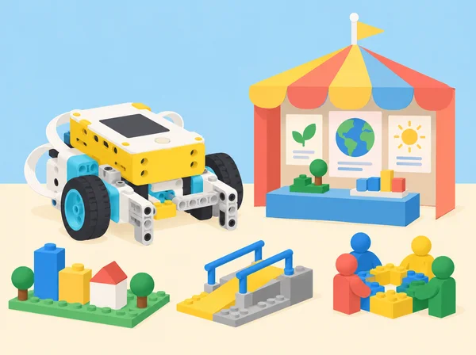

Camins, habilitats i possibilitats
🏷️ Professions i comunitat
🌱 Situació, repte i intenció
Els equips creen un mapa de professions i una maqueta de la fira, revisen els interessos i habilitats que cadascú ha triat compartir i investiguen opcions formatives vigents al nostre entorn. La situació adapta les tres lliçons de la unitat 9 Careers Culminating Project. No és una prova d’aptitud, un consell d’orientació individual ni una predicció laboral: obri possibilitats i ofereix informació contrastable sense exigir que ningú revele expectatives personals.
🎯 Aprenentatges i vocabulari
- Analitzar una situació quotidiana i identificar professions de diversos sectors que hi intervenen directament i indirectament.
- Classificar feines per tasques, entorns, habilitats, formació i relacions amb altres rols, amb fonts actuals i citades.
- Representar visualment xarxes de treball interdependents i explicar què aporta cada rol a l’experiència dels visitants.
- Reconéixer competències transferibles desenvolupades en el curs (comunicació, col·laboració, creativitat, resolució de problemes, organització i autoregulació) i relacionar-les amb famílies de professions sense reduir-les a una única ocupació.
- Comparar una primera reflexió opcional sobre interessos amb una revisió final, respectant que les preferències poden canviar o romandre igual.
- Construir un pla d’exploració a curt termini, no una promesa de trajectòria: una pregunta, una font, una experiència segura i una persona o servei professional que podria orientar.
🔎 Vocabulari i continguts
Ocupació: conjunt concret de tasques i responsabilitats en un lloc de treball. Família professional: agrupació àmplia de feines que comparteixen àmbits o competències; les classificacions varien entre sistemes. Qualificació: formació, acreditació o experiència requerida per a una ocupació concreta, que cal comprovar amb fonts actuals. Competència transferible: habilitat que pot resultar útil en diversos contextos, com comunicar una decisió o treballar amb dades. Itinerari: combinació possible d’aprenentatges, pràctica i experiències; no és lineal ni igual per a tothom.
La guia LEGO anomena les famílies d’ocupacions “career clusters” i inclou una primera reflexió de curs per comparar-la al final. L’adaptació usa materials propis, prioritza fonts valencianes i estatals actualitzades, i evita escales de puntuació d’“ocupabilitat”: un autorecompte escolar no permet mesurar el valor ni el futur professional d’una persona.
🧰 Materials i preparació
Prepareu una llista gran i neutral de sectors/àmbits professionals i imatges de llocs de treball diversos sense estereotips de gènere, edat, origen o discapacitat. Recopileu enllaços actuals de portals públics d’orientació, catàlegs oficials d’estudis, perfils professionals i serveis municipals o autonòmics. La docent revisa abans la qualitat, data, autoritat i abast de cada font; cap estimació d’ofertes de feina es presenta com a predicció segura.
Prepareu cartó, paper, peces de SPIKE, retoladors, notes adhesives i una plantilla de xarxa d’actors que es puga fer en paper o en format digital.
Abans del curs, podeu oferir una fitxa privada i opcional sobre àrees que desperten curiositat, tasques que agraden o habilitats que es volen practicar. Expliqueu que pot quedar en blanc, respondre’s des de la perspectiva d’un personatge fictici o substituir-se per una professió investigada. No arreplegueu les respostes personals ni les compareu entre alumnat.
Per a l’alumnat que no tinga una fitxa inicial, useu la reflexió del començament d’aquesta unitat com a primera mostra i deixeu clar que els períodes no són equivalents.
📅 Seqüència didàctica
Una fira que funciona per moltes mans (90 min)
Fase 1 · Activem i prediem
Fase 2 · Explorem i construïm
Fase 3 · Expliquem i registrem
Representació: construïu una maqueta modular amb peces SPIKE i cartó o una xarxa visual amb targetes. Connecteu professió → tasca → necessitat del visitant; indiqueu si el treball és abans, durant o després de la fira.
Fase 4 · Apliquem i millorem
Posada en comú: expliqueu qui es relaciona amb el públic i qui treballa entre bastidors. Altres equips afegeixen rols que falten, per exemple qui manté els lavabos accessibles o verifica el subtitulat.
Fase 5 · Comprovem i reflexionem
Elaboració: amplieu la xarxa amb qüestions de calor, llum, so, trànsit, menjar, connectivitat, salut, neteja i pagament; reviseu si les primeres idees deixaven fora algun servei o feien una suposició estereotipada. Evidències: mapa de professions amb fletxes i fonts, maqueta o alternativa plana, llista de tasques visibles/invisibles i una pregunta sense resposta. No es demana a ningú dir quina d’aquestes feines voldria fer.
Habilitats que es practiquen i interessos que evolucionen (120 min)
Fase 1 · Activem i prediem
Activació: useu un cas fictici: organitzar una visita en transport públic, entendre un plànol, revisar accessibilitat, comunicar informació i gestionar un pressupost. L’alumnat identifica sabers escolars, matemàtics, lingüístics, creatius i socials implicats, i quines professions podrien aportar-los.
Fase 2 · Explorem i construïm
Fase 3 · Expliquem i registrem
Fase 4 · Apliquem i millorem
Fase 5 · Comprovem i reflexionem
Un pla d’exploració possible (120 min)
Fase 1 · Activem i prediem
Activació: planificar una meta quotidiana —com preparar una excursió o triar un curs— requereix passos, informació, opcions i revisió. Compareu un pla rígid amb un pla flexible i identifiqueu dependències i incerteses.
Fase 2 · Explorem i construïm
Recerca: cada alumne tria en privat una ocupació per investigar, o selecciona un cas fictici d’una professió de la maqueta. Consulteu fonts actuals per esbrinar tres tasques concretes, estudis o acreditacions que poden requerir-se, competències, entorns de treball, feines relacionades i on trobar més orientació a la Comunitat Valenciana. Citeu data de consulta i distingiu requisits legals d’un anunci o opinió. No s’infereix un futur salari o disponibilitat de feina sense una font actual i contextualitzada.
Fase 3 · Expliquem i registrem
Fase 4 · Apliquem i millorem
Pla a curt termini: escriviu un pas exploratori viable per a les pròximes setmanes (llegir una font, provar una tasca en club escolar, parlar amb orientació o visitar un espai públic), una habilitat que es voldria practicar, una persona/servei que podria ajudar i un pla alternatiu si canvien els interessos. No inclogueu informació de contacte privada ni compromisos amb persones adultes sense mediació docent.
Fase 5 · Comprovem i reflexionem
🧪 Evidències i avaluació
Avalueu els productes públics de l’activitat, no l’autorevelació: xarxa de professions, mapa de necessitats, ús de fonts, representació de la maqueta, relació entre habilitats i tasques, i presentació/esquema final. Criteris: (1) identifica ocupacions abans/durant/després de la fira i explica el seu impacte; (2) distingeix informació verificada d’hipòtesi i cita fonts; (3) reconeix que habilitats i formació poden combinar-se per vies diferents; (4) proposa un següent pas d’exploració concret i flexible en el cas investigat;
(5) revisa el mapa a partir de preguntes o evidències. La reflexió personal es queda en mans de l’alumne i no forma part de la rúbrica. Autoavaluació opcional: quina tasca del projecte m’ha agradat practicar, què voldria aprendre encara i quina ajuda podria demanar?
♿ Participació, accessibilitat i seguretat
Oferiu alternatives per a la reflexió personal (personatge, professió investigada o resposta en blanc), no demaneu preferències davant del grup i no useu escales de 1–10 com a mesura objectiva de capacitat. Incloeu exemples de professionals diversos i eviteu associar professions amb gènere, origen, condició socioeconòmica o discapacitat. Faciliteu mapes tàctils, lletra clara, versions en lectura fàcil, comunicació escrita/visual i rols accessibles de recerca, construcció i presentació. La docent no guarda plans personals sense motiu pedagògic justificat ni els comparteix.
Els comentaris entre companys descriuen conductes observades i no etiqueten les persones.
🔗 Referents i adaptació
Per a informació formativa, consulteu portals oficials d’orientació i catàlegs de Formació Professional de la Generalitat Valenciana i del Ministeri d’Educació; per a l’ocupació, useu fonts estadístiques i serveis públics d’ocupació actualitzats. La docent ha de comprovar que la pàgina continua vigent i separar les dades de l’Estat, la Comunitat Valenciana i altres territoris. L’alumnat registra títol, entitat responsable, URL i data de consulta, i compara almenys dues fonts quan parla de requisits o oportunitats.
Les professions canvien i el pla personal és revisable; una estimació de vacants no garanteix una plaça futura.
🔗 Referent oficial i adaptació
Adapta les tres lliçons de la unitat 9 Careers Culminating Project de LEGO Education Foundations of Physical Computing: Culminating Activity: Careers, My Career Interests i My Career Reflection and Plan. Preserva l’anàlisi de professions que intervenen en un esdeveniment, la investigació de tasques/formació/habilitats, la representació física, el mapa de competències compartides, la comparació de reflexions inicials i finals i un pla d’acció; canvia la convenció fictícia per una fira escolar propera i fa privades les respostes d’interessos.
Els documents i les il·lustracions són originals.